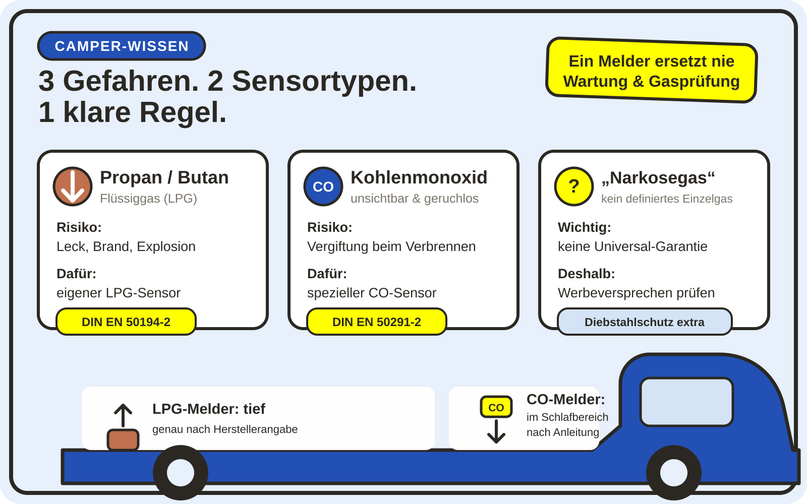

Detectores de gas en autocaravanas: ¿Qué detector protege realmente?
Se supone que una pequeña caja debe velar por nuestras vidas mientras dormimos. Eso suena tranquilizador, pero solo funciona si el sensor realmente encaja con el acelerador. El gas licuado, el monóxido de carbono y el frecuentemente promovido "gas anestésico" son tres temas distintos. Por eso ejecuté la prueba de laboratorio de 15 dispositivos desde Motorhome International 02/2025 y 03/2025 y comparados con las normas y las instrucciones de seguridad vigentes.

Resumen para quienes tengan prisa
- Para el propano y el butano, necesitas un certificado Sensor de GLP.
- Para el monóxido de carbono, necesitas un sensor propio de CO; un sensor de GLP de banda ancha no es un sustituto fiable.
- Comprobar la Declaración de Conformidad de la UE DIN EN 50194-2 para gases inflamables o DIN EN 50291-2 para CO en vehículos recreativos.
- Los detectores de GLP suelen instalarse en profundidad, y los detectores de CO en la zona de respiración o de sueño; las instrucciones para cada dispositivo específico siguen siendo cruciales.
- Un "detector de gases anestésicos" no puede garantizar una lista desconocida de todas las sustancias concebibles. Trata esta función como un complemento, no como protección contra intrusiones.
Tres peligros que a menudo se agrupan
Propano y Butano
El gas licuado inflamable puede filtrarse de botellas, mangueras, reguladores o tubos. Se está buscando un detector para GLP o gases inflamables.
monóxido de carbono
El producto tóxico de la combustión es incoloro e inodoro. Requiere un sensor de CO especialmente diseñado y una posición de montaje diferente.
"Gas anestésico"
No se trata de una sustancia única, técnicamente claramente definida. Un dispositivo solo puede detectar las sustancias para las que su sensor está diseñado y probado.

1. GLP: Cuando hay fugas de propano o butano
En las autocaravanas, el gas licuado suele suministrar estufas, calentadores o frigoríficos. Si el propano o butano escapa sin quemarse, además del riesgo de asfixia, existe sobre todo un riesgo de incendio y explosión. Ambos gases tienden a acumularse en zonas profundas. Por ello, según el manual del fabricante, un sensor de GLP suele colocarse cerca del suelo y no en un lugar cómodamente a la altura de los ojos.
Para detectores instalados de forma permanente en vehículos recreativos, el DIN EN 50194-2:2020-08 La referencia importante. Describe los procedimientos de prueba y los requisitos de rendimiento para dispositivos que detectan vapores de GLP o gasolina y proporcionan advertencias visuales y acústicas. Una referencia a esta norma en la actual Declaración de Conformidad de la UE es más significativa que una página de producto llena de palabras de moda.
Importante: El detector debe detectar gas que escapa antes de alcanzar una concentración crítica. Sin embargo, no evita la fuga. La válvula de botella, el regulador de presión, la manguera, las tuberías y los dispositivos aún deben estar en buen estado.
2. CO: El peligro invisible de la combustión
El monóxido de carbono se produce durante una combustión incompleta, por ejemplo, debido a un dispositivo defectuoso, tubos de escape dañados o dispositivos de combustión inadecuados en el interior. El CO no puede olírse ni verse ni oler. Por eso es tan importante una alerta audible de CO en la pequeña zona de descanso de una autocaravana.
El DIN EN 50291-2:2020-10 se ocupa de dispositivos de alerta de CO para operación continua en vehículos recreativos y entornos similares, incluidas embarcaciones recreativas. Para la selección, instalación, uso y mantenimiento, también está disponible la guía actual DIN EN 50292:2024-07.
Un error común es: un sensor que detecta propano y butano de alguna manera también capturará CO. En la prueba RMI, varios de estos sensores de banda ancha anunciados fallaron en CO, mientras que sensores de CO separados de los mismos sistemas, ofrecidos específicamente para este fin, funcionaron. Mi conclusión clara: si hay CO en el embalaje, también debe haber un sensor de CO real y designado detrás.
3. ¿Y qué pasa con el "gas anestésico"?
Persisten historias de viajeros supuestamente drogados con gas durante un robo. El problema ya empieza con el término: «gas anestésico» no nombra una sustancia clara. Sin embargo, un sensor no puede responder a una palabra, solo a ciertos compuestos químicos o grupos de sustancias.
Para el seguimiento, RMI utilizó tricloroetileno y eligió 240 ppm como concentración de prueba. El propio equipo editorial enfatiza que no existe un estándar específico de prueba DIN para sensores generales de "gas anestésico". El artículo adjunto también distingue entre dos situaciones: una gran cantidad de gas que hace dormir silenciosa y con precisión a las personas despiertas no se considera muy plausible; Una baja concentración en quienes ya están dormidos podría teóricamente tener un efecto diferente. Según el equipo editorial, no había pruebas sólidas de robos de concreto.
Por eso nunca haría de esta característica adicional el criterio principal. Puede resultar interesante si un detector fiable de GLP también detecta ciertos vapores de disolventes. Sin embargo, la seguridad de la puerta, un sistema de alarma, un lugar seguro donde pasar la noche y tu propio comportamiento ayudan a evitar robos. Un detector de gas no sustituye estas medidas.
Lo que realmente probó la prueba de laboratorio RMI de 2025
La impresión especial que fotografiaste contiene dos publicaciones Motorhome International 02/2025 y 03/2025 juntos. Se probaron quince dispositivos o variantes, así como sensores adicionales. Además de la reacción al propano/butano, monóxido de carbono y, posteriormente, al tricloroetileno, el equipo editorial consideró, entre otras cosas, el consumo de energía, el volumen de alarma, las autopruebas, la visualización de errores, el etiquetado y las instrucciones de instalación.
Para LPG y CO, el equipo editorial siguió los requisitos de concentración y temporización de las normas correspondientes. La prueba de gases anestésicos, en cambio, fue una prueba complementaria elaborada editorialmente. Lo que resultó especialmente llamativo no fue solo, si Se activaba una alarma, pero también si un dispositivo reportaba un sensor defectuoso y si el manual indicaba la ubicación correcta de instalación.
Las cuatro familias de productos recibieron una calificación positiva en la impresión especial
La siguiente visión general muestra el estado de las muestras analizadas a finales de 2024. No es una garantía actual de precio o compra: los fabricantes pueden haber cambiado hardware, software, manuales o nombres de modelo mientras tanto.
| Familia modelo | Tarea probada | Nota final de RMI | Clasificación importante |
|---|---|---|---|
| Thitronik G.A.S. | GLP y tricloroetileno | Muy bien | Detector de hidrocarburos independiente; No hay detector de CO. |
| Thitronics G.A.S. Pro III | Unidad de control separada de CO o GLP, combinable con sensor auxiliar correspondiente | Muy bien | La versión adecuada y el sensor adicional adecuado son cruciales. |
| AS-Schwabe H-AL 8300 | GLP y tricloroetileno | Bien | Advertencia temprana, pero en la prueba alto consumo de energía y sensibilidad muy alta; Sin sensor de CO. |
| Carbest Gas Stick | GLP y tricloroetileno | Bien | Muy sensible y móvil; Considere la instalación, la fuente de alimentación y posibles falsas alarmas. |
RMI calificó las muestras restantes como "débiles" o "inadecuadas". Deliberadamente no conto una lista negra permanente de esto: el modelo actual, la declaración de conformidad actual y los nuevos informes de prueba comprensibles son decisivos. Las sentencias individuales completas están disponibles en la edición especial vinculada.
Mi lista de comprobación para comprar un detector de gas
- Definir peligro: ¿Quieres monitorizar GPL, CO o ambos? Ambos requieren dos sensores adecuados o un sistema con elementos sensores separados.
- Vehículo estándar de búsqueda: La DIN EN 50194-2 para gases combustibles y la DIN EN 50291-2 para CO están específicamente adaptadas para vehículos recreativos.
- Lea la Declaración de Conformidad de la UE: No mires solo una marca CE en una foto de tienda. La declaración debe especificar el modelo específico, el fabricante y las normas aplicadas. La UE señala que el marcado CE se basa fundamentalmente en la declaración de responsabilidad del fabricante.
- Comprobar tipo de sensor: Para CO, requiere explícitamente un sensor especial de CO. Un vago "3-gas" o "universal" no me basta.
- Visualización de errores y vida útil: El dispositivo debe informar claramente de una falla del sensor y el final de su vida útil. Compruebe si el sensor o el dispositivo completo necesitan ser reemplazados más tarde.
- Poder oír la alarma: El sonido debe despertarte de forma fiable a la hora de dormir. Las personas con discapacidad auditiva pueden necesitar una advertencia adicional visual o vibratoria compatible.
- Calcula de forma realista la demanda eléctrica: En la comparación con RMI, el consumo diario varió considerablemente. Cuando estás de pie de forma independiente, cada Ah cuenta, pero aún así no puedes desactivar la protección mientras duermes.
- Consulta las instrucciones originales antes de comprar: Si la altura de montaje, las distancias, el tiempo de calentamiento, el intervalo de prueba, la limpieza y la fecha de reemplazo están claramente indicadas, es una buena señal.
Montaje: El lugar equivocado hace que el mejor sensor sea inútil
Según las instrucciones, los detectores de GLP suelen estar en el interior profundo porque el propano y el butano descienden hacia abajo. No deben desaparecer en la caja de gas si quieren controlar las zonas de respiración y de vida. Evita puntos ciegos, zonas de rociado directo y zonas justo al lado de la cocina, los productos de limpieza o la laca si el fabricante espera falsas alarmas allí.
El CO se comporta de forma diferente y se distribuye con el aire de la habitación. El detector de CO debe estar en o cerca de la zona de descanso, tal y como prescriben las instrucciones para una autocaravana. Montar ambos sensores uno al lado del otro en el suelo solo porque quede bien no sería una buena solución.
Los dispositivos conectados de forma permanente requieren un suministro permanentemente seguro y seguro. Los dispositivos móviles o alimentados por batería deben ser explícitamente adecuados para su uso previsto. Pruebe la función de advertencia en los intervalos especificados por el fabricante y reemplace pilas, sensores o dispositivos a tiempo. Por favor, nunca "pruebes" con gas más ligero, gases de escape o una llama abierta.
¿Qué hacer cuando suena la alarma?
- Sin llama, sin humo y sin interruptores eléctricos de funcionamento.
- Saca a todo el mundo al exterior inmediatamente.
- Solo si es posible sin demora y sin riesgo: cierra la válvula de la botella y ventila desde el exterior.
- En caso de peligro fuerte, persistente o poco claro, llame al 112.
- Usar el sistema solo de nuevo después de un examen profesional.
- Despierta a todos inmediatamente y abandona la caravana.
- Sal fuera y quédate fuera.
- Llame al 112 – especialmente para dolores de cabeza, mareos, náuseas, mareos o dificultad para respirar.
- No vuelvas hasta que el personal de emergencia o expertos den luz verde.
- Haz que la causa se aclare profesionalmente antes de tu próximo uso.
El Asociación Alemana de Bomberos En caso de alarma de CO, aconsejal salir inmediatamente, llamar a emergencias al 112 y no volver a entrar. Este orden se aplica igual a las autocaravanas: el interior pequeño puede llenarse especialmente rápido.
El detector no reemplaza la prueba de gas
Desde el 19 de junio de 2025, la inspección recurrente de los sistemas de gas licuado afectados en vehículos recreativos alemanes es obligatoria. § 60 StVZO se refiere a la hoja de cálculo DVGW G 607. Las inspecciones se realizan antes de la primera puesta en servicio, tras cambios sujetos a inspección y, posteriormente, a más tardar cada 24 meses. El DVGW Explica: Las tuberías, el equipo y todo el sistema deben ser inspeccionados periódicamente por expertos.
Esto no es una duplicación. La inspección tiene por objeto prevenir e identificar deficiencias; la advertencia también debe hacer sonar la alarma si aún persiste gas o CO. Al igual que los cinturones de seguridad y los frenos, ambos cumplen funciones diferentes.
Preguntas frecuentes
¿Necesito un GPL y un detector de CO en la autocaravana?
Si usas un sistema de gas licuado y dispositivos de combustión, la combinación tiene sentido. Elige dos dispositivos adecuados o un sistema con sensores de GLP y CO claramente separados. Un único sensor de banda ancha con un "para todo" general no me convence.
¿Un detector de humo también detecta monóxido de carbono?
No. Un detector de humo reacciona a partículas de humo, un detector de CO a monóxido de carbono. Existen dispositivos combinados, pero deben seguir conteniendo tecnologías de sensores separadas designadas para su propósito.
¿El botón de prueba demuestra que el sensor de gas mide correctamente?
Dependiendo del modelo, el botón de prueba comprueba la electrónica, la pantalla y la alarma; El manual indica hasta qué punto se supervisa el sensor en sí. Una prueba de botón no sustituye la monitorización automática de fallos ni la sustitución oportuna de sensores.
¿Es suficiente el marcado CE al comprar?
Es importante, pero no es un sello de prueba independiente. Haz que te muestren la Declaración de Conformidad de la UE actual y comprueba si tu modelo exacto y la norma correspondiente para vehículos recreativos están allí listados.
¿Cuánto dura un detector de gas o CO?
Eso depende del sensor y del dispositivo. Busca información sobre fabricación, reemplazo o fin de vida útil y céñete al intervalo más corto mencionado. Un sensor antiguo no es fiable solo porque el LED sigue encendido.
Conclusión: No "un solo dispositivo para todo", sino la protección adecuada para cada peligro
Mi resultado más importante de la gran prueba es sorprendentemente sencillo: cuando se trata de detectores de gas, la especialización cuenta más que una larga lista en el envase. Para el propano y el butano, un sensor de GLP adecuado debe estar en el lugar adecuado de instalación profunda. Para el monóxido de carbono, un sensor real de CO debe estar en la zona de descanso. Y cualquiera que también quiera ser advertido sobre ciertos vapores de disolventes debe comprobar cuidadosamente qué sustancias nombra y documenta realmente el fabricante.
Prefiero comprar un sistema perfectamente documentado con dos sensores a juego que un dispositivo universal barato con grandes promesas. Además, hay una prueba de gas, aberturas de ventilación libre, aparatos bien mantenidos y un plan de alarma que todos los pasajeros conocen. La seguridad en la furgoneta no es una sola caja, sino una cadena donde debe funcionar cada eslabón.
Fuentes, transparencia y estado de los datos
Estado: 6 de septiembre de 2026. Los resultados de la revista se refieren a las muestras analizadas a finales de 2024 y a las publicaciones de 2025. Son posibles cambios de producto tras las pruebas. Esta publicación no contiene enlaces de productos de pago y no sustituye la consultoría de una compañía de gas.
- Reisemobil International: 15 detectores de gas para autocaravanas en pruebas de laboratorio
- Motorhome International: Peligro invisible – Detectores de gas en prueba
- Impresión especial de Reisemobil International 02/2025 y 03/2025 (PDF, proporcionado por Thitronik)
- DIN Media: DIN EN 50194-2 – Gases inflamables en vehículos recreativos
- DIN Media: DIN EN 50291-2 – CO-Warner para vehículos recreativos
- DIN Media: DIN EN 50292 – Selección, instalación y mantenimiento de detectores de CO
- DVGW: Buen viaje con la caravana
- Leyes en Internet: § 60 StVZO – Sistemas de gas licuado en vehículos
- Asociación Alemana de Bomberos: Comportamiento en la alarma CO
- Unión Europea: marcado CE y responsabilidad del productor
Nos vemos pronto y siempre buen viaje,
tu Tussy 💛